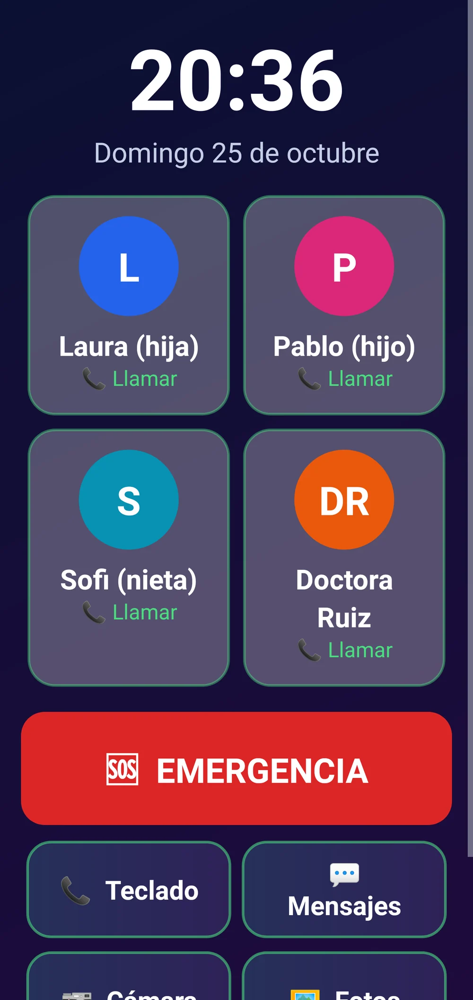
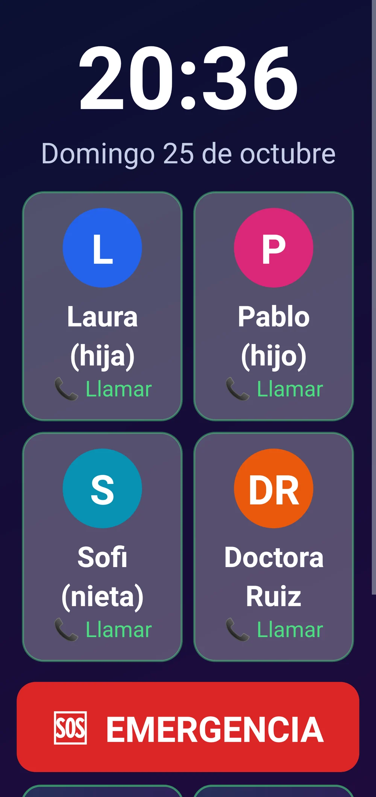
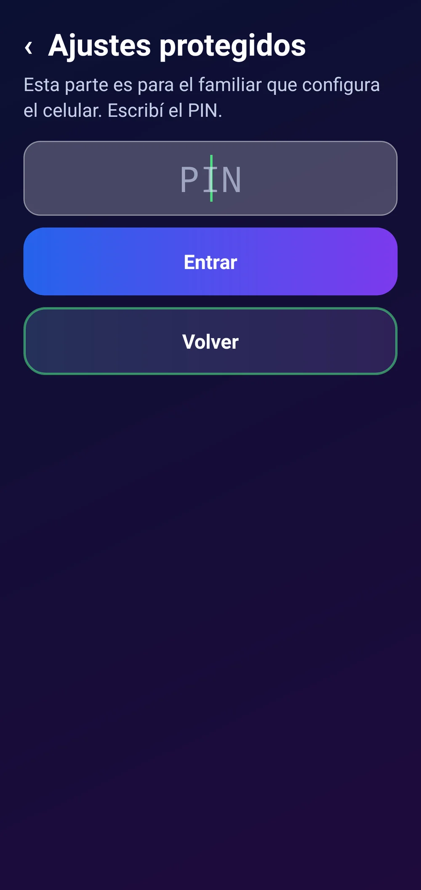
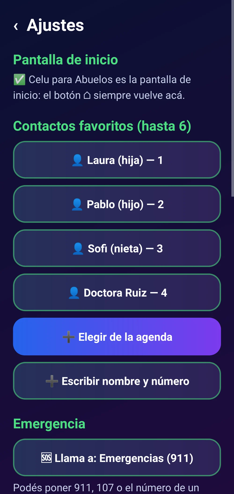
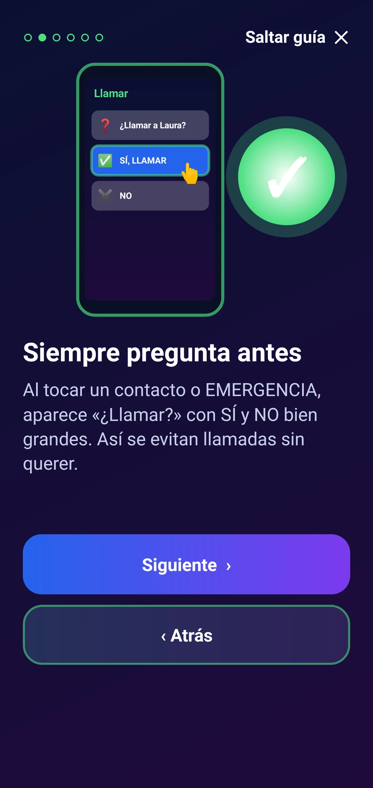
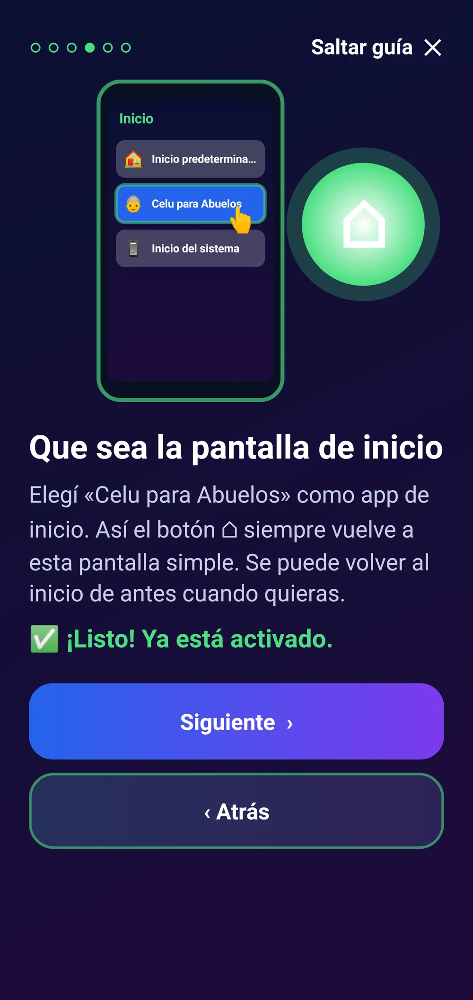

Inicio › Apps › Celu para Abuelos
Celu para Abuelos
Pantalla de inicio simple: letras grandes, botones para llamar a la familia, emergencia y ajustes con PIN.
El celular de siempre, pero fácil: la familia a un toque y la emergencia siempre a mano.
El PIN protege los ajustes de esta app; Android igual permite cambiar la pantalla de inicio desde sus propios Ajustes. Llamar a emergencias depende de que el celular tenga señal y línea. No envía datos: los contactos quedan sólo en el celular.
Para celulares Android 9 o más nuevos.
Sin publicidad. Nunca.Pagás una vez y la app es tuya: sin banners, sin videos que te hacen esperar, sin interrupciones. Por qué cobramos
 Un celular simple para los abuelos
Un celular simple para los abuelos

Contactos grandes y emergencia

Letra todavía más grande

Ajustes con PIN

Un familiar lo configura

Siempre pregunta antes de llamar

Se elige como pantalla de inicioLo que la hace distinta
- 👆 Botones enormes con el nombre de cada familiar.
- 🆘 Emergencia siempre visible, y pregunta antes de llamar.
- 🔒 Ajustes con PIN: no se desconfigura sin querer.
- 🔠 Letra regulable, pensada para ver bien.
- 🏠 Se elige como inicio: ⌂ siempre vuelve acá.
- 💚 Si vence la prueba, el inicio y la emergencia siguen funcionando.
Qué es
Celu para Abuelos convierte el celular en uno fácil: la hora grande, botones con la inicial y el nombre de cada familiar para llamar, un botón rojo de EMERGENCIA y sólo las apps que hacen falta. Antes de cada llamada pregunta «¿Llamar?» con SÍ y NO bien grandes. Un familiar carga los contactos y el número de emergencia, y todo queda protegido con un PIN para que nadie lo desconfigure sin querer.
Qué hace
- Reemplaza la pantalla de inicio por una muy simple: la hora grande, la fecha y la batería.
- Botones grandes para llamar a hasta 6 familiares o contactos (se eligen de la agenda o se escriben).
- Botón rojo de EMERGENCIA que llama al número que elijas (911, 107 o un familiar). Antes de llamar, siempre pregunta «¿Llamar?» con SÍ y NO grandes.
- Acceso directo a Teclado, Mensajes, Cámara y Fotos, y a hasta 6 apps que elijas.
- Los ajustes (contactos, emergencia, tamaño de letra, apps) quedan protegidos con un PIN de 4 a 8 números, con espera tras varios intentos fallidos.
Requisitos
- Celular Android 9 o más nuevo
- Elegirla como app de inicio (la guía te lleva)
- Permiso de llamadas: opcional (sin él, se abre el teclado con el número escrito)
Funciones
- Hora, fecha y batería en letras grandes
- Hasta 6 contactos favoritos con botón grande
- Botón de EMERGENCIA (911 u otro número)
- Siempre pregunta «¿Llamar?» antes
- Ajustes protegidos con PIN
- Tamaño de letra regulable
- Teclado, Mensajes, Cámara, Fotos y hasta 6 apps elegidas
- El inicio y la emergencia siguen andando aunque termine la prueba
Cómo se instala
- Descargá el APK e instalalo (si Android pregunta, permití instalar desde el navegador).
- Seguí la guía: permití llamadas y elegí «Celu para Abuelos» como pantalla de inicio.
- Tocá «Ajustes (con PIN)», creá el PIN y cargá contactos y número de emergencia. Para comprar: «Activar» → «Comprar con Mercado Pago».
Novedades
- 1.0.0 — Primera versión.